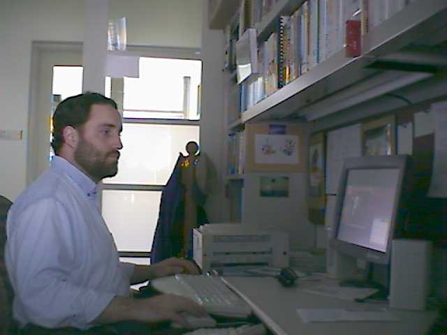
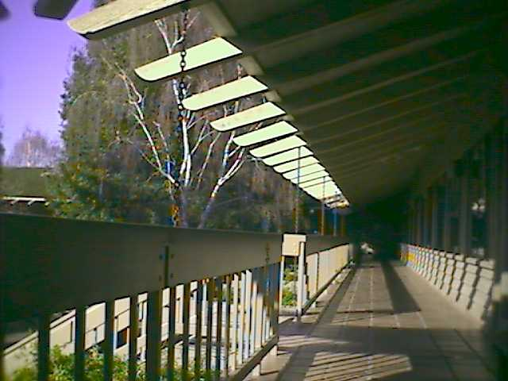

| ShopWell | home | Vignette | AT&T |
I worked at AT&T in Holmdel, NJ and Menlo Park, CA, from 1995 until 2000.
In Holmdel, NJ, I shared an office with a coworker. When I moved to Menlo Park, CA, I shared a small room with two other people before finally getting my own office. It had a door that I could close (but not lock). Here is a picture of me in that office in Menlo Park, CA.

In Holmdel, NJ, none of the offices had windows. In Menlo Park, CA, pretty much all the offices had a window, except for the small room I occupied upon my arrival. This was the view from my window in Menlo Park, CA. It opened on the courtyard in the middle of the building which had a water fountain in the center.

In New Jersey, I had to drive to work. There was a lot of parking space around the building.